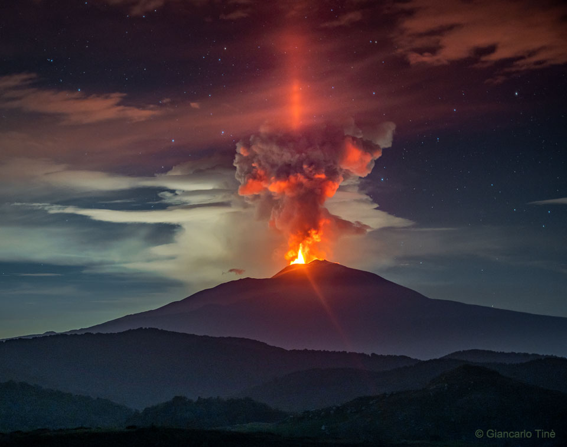

说明：那座火山上方出现了什么？一个非常不寻常的东西——火山光柱。最典型的光柱是由太阳引起的，看起来像一根明亮的柱子，在初升或将落的太阳上方向上延伸。另外，在街灯和房屋灯的上方记录下来了其他类型的光柱——其中一些色彩丰富。不过，这根光柱是由火山喷发的炽热岩浆发出的红光照亮的。这座火山是意大利的埃特纳火山，这张特色照片是在6月中旬日落几小时后拍摄的。火山灰云上方冰冷的温度在火山上方的卷云或埃特纳火山喷出的冷凝水蒸气中形成了冰晶。这些冰晶大部分相对于地面是平的，但会飘动，于是反射出了火山口的光。